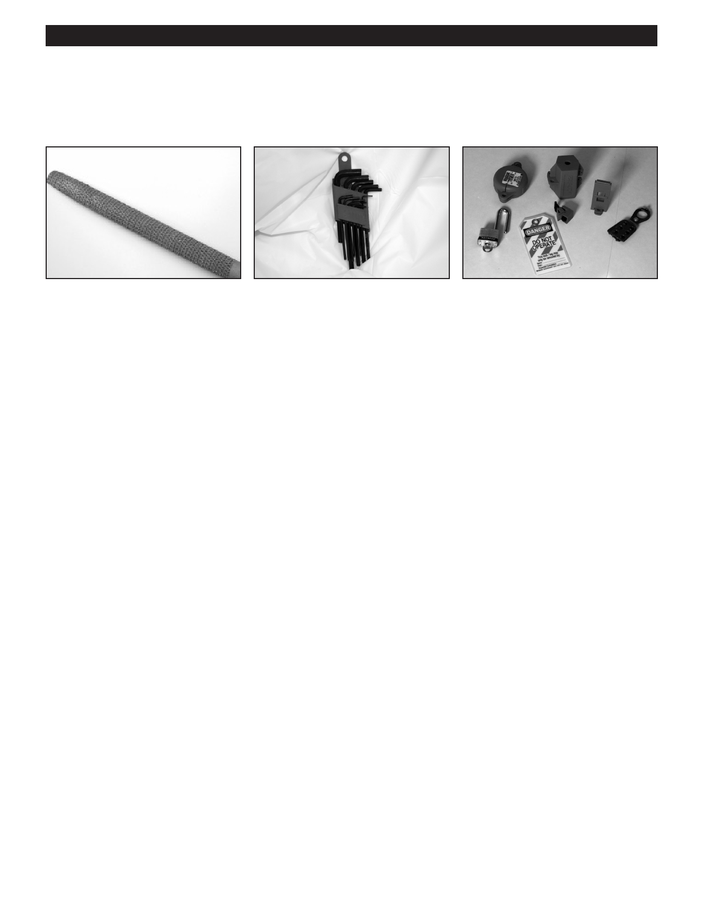

PA RT I C I PA N T R E S O U R C E G U I D E
Key Tools for Air Conditioning Repairs (continued)
The Basic Hand Tools
Files can be used to smooth the edges An Allen wrench set can be used
Lockout/tagout kits should be used
of copper pipe.
to remove blower wheels and fan
to identify that a power source, such as
blades—it can also be used for opening a main shut-off valve or circuit breaker,
or closing some of the most popular
is shut off and secured.
types of air conditioning service valves.
Notes:
9